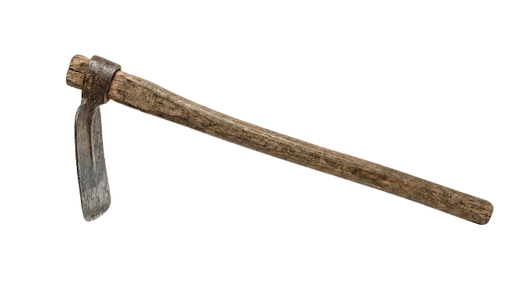
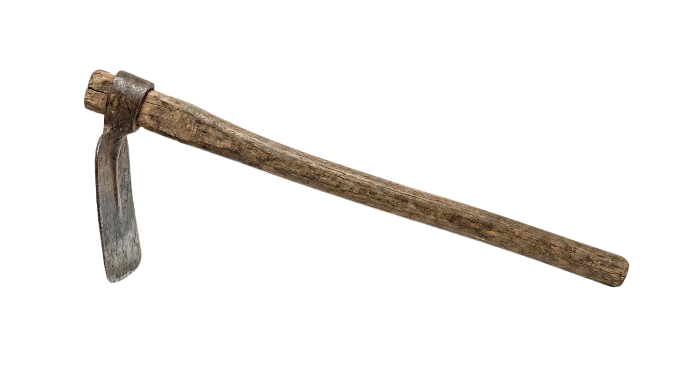
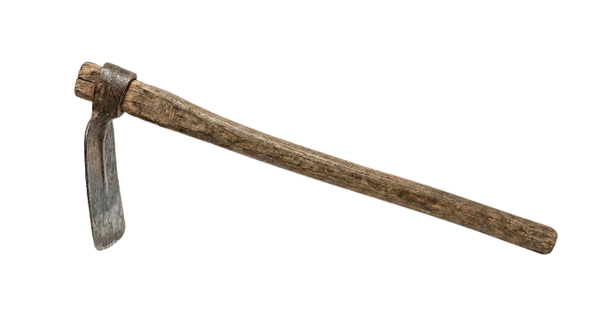

Un atardecer cálido donde cada flor guarda una carta de amor.
Galería del bosque
Luciérnagas, margaritas y recuerdos en escena.
Carpir
Limpia la tierra con el azadón para revelar nuestro recuerdo.

A carpir como peji mi amor porque bien sabemos que solo después de una buena desmontada se revela lo que realmente es hermoso... y se confirma que cada sudor vale la pena.
 
